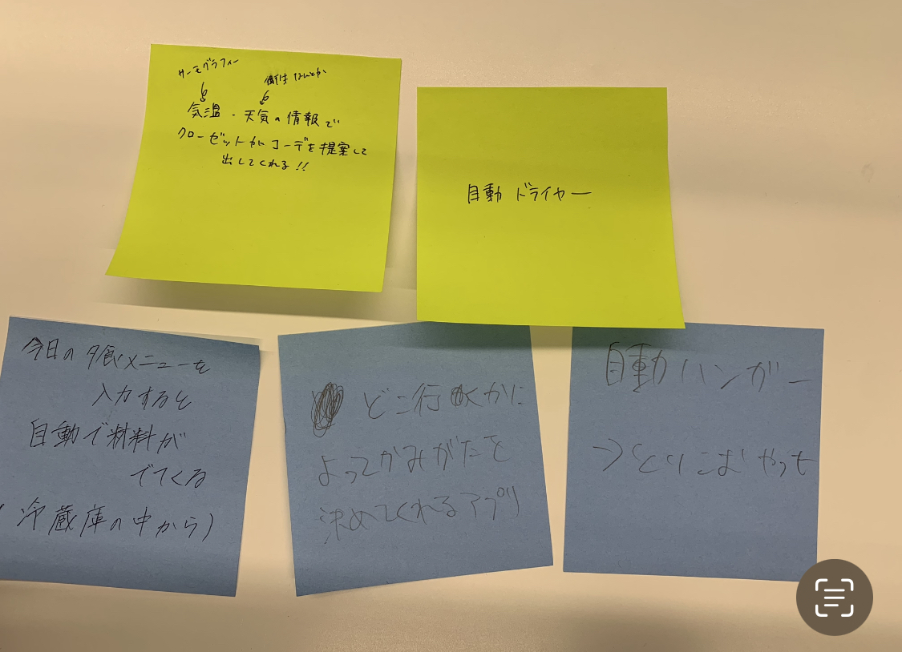

아직아직...
1.IoTとは何か
IoTとは、「Internet of Things」の略であり、日本語では「モノのインターネット」と訳されます。
IoTの応用例としては、スマートホーム、スマートシティ、農業や製造業の自動化、ヘルスケア、交通インフラなどIoTは、
多大なビジネス上の利益を支配し、プライバシーやセキュリティの問題も抱えているため、適切な管理が求められます。
IoTで何ができそうか？グループワークした内容（ポストイット画像）

IoTで何ができそうか？自分で考えたアイディア（スケッチ）
その日の天気や気候に合わせて服のコーディネートをしてくれるクローゼット